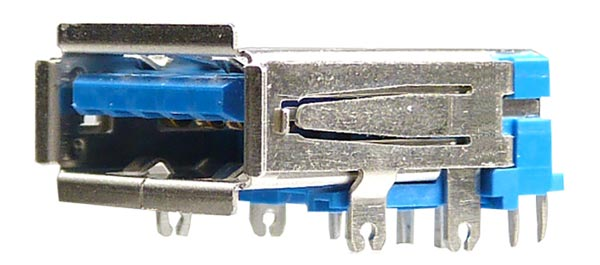
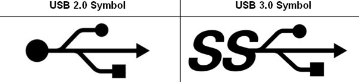

USB کلمه مخفف Universal Serial Bus می باشد که توسط یک گروه از کمپانی های پیشرو در زمینه کامپیوتر و صنایع الکترونیکی طراحی شده است. اعضای اصلی تشکیل دهنده این گروه شامل شرکت هایی از جمله IBM ، HP، APPLE ، Intel ، Microsoft و Compaq هستند که هر کدام از این شرکت ها در طراحی و اجرای این پروژه سهیم بوده اند. به طور مثال شرکت مایکروسافت بخش نرم افزاریUSB برای ویندوز و شرکت Intelکنترلگر UHCI را تولید کرده است. به همین دلیل USB ها در مدت زمان بسیار کمی مورد توجه و استقبال عموم مردم قرار گرفته اند و تا امروز هم شاهد حضور موفق و نقش کلیدی آن در اتصالات و انتقال اطلاعات هستیم.

نسل های USB:
1- USB 1 : در سال 1996 میلادی به بازارعرضه شد که از سرعت انتقال اطلاعات پائینی برخوردار بودند که سرعتی حدود 12 Mbit/s (معادل 1/5مگابایت بر ثانیه) داشتند لذا مدت زمان زیادی نگذشت که نسل های بعدی آن با سرعتهای بالاتری ساخته شد.
2- USB 2 : نسل بعدی USB بطور رسمی بعنوان تکنولوژی مدرن تر در اپریل سال 2000 میلادی ارائه شد. این پورتها با سرعت بسیار بالاتری نسبت به نسل قبلی خود عرضه شد. کارایی این پورتها بسیار بالاست و سرعتی حدود 60 مگابایت برثانیه (معادل (480 Mbit/sدارند. مانند Flash Memoryها و دستگاه های مجهز به این پورت ها .
3- USB 3 : نسل سوم و آخر که USB 3 نام دارند در نوامبر سال 2008 میلادی به بازار عرضه شد که از سرعت انتقال اطلاعاتی بسیار بالایی برخوردارهستند ( تقریبا 5Gbit/s ) که سازگار با نسل USB 2.0 نیز هستند و امروزه بیشترین کاربرد را دارند .
تکنولوژیUSB به دور از نسخه های ارائه شده آن به قدری مورد توجه و استقبال گسترده قرار گرفت که امروزه به عنوان مطرح ترین تکنولوژی اتصالات به شمار می آید. لذا شرکت های سازنده وسایل دیجیتالی نیز ناچار شدند این تکنولوژی را در ساخت و تولید وسایل خود به کار ببرند.
انواع پورت های USB :
USB-type A
شناخته شده ترین پورت USB همین نوع A می باشد. که تمامی کامپیوترهای شخصی مجهز به این پورت هستند. همچنین تمامی فلش مموری ها و وسایل دیجیتالی دیگر نیز قابلیت پشتیبانی و اتصال با کامپیوتر از طریق این پورت را دارند.
USB-type B
این مدل از پورت ها اکثرا در وسایل جانبی مانند پرینتر و اسکنرهایی که به کامپیوتر متصل می شود بیشترمورد استفاده قرار می گیرند. دراین مدل سرعت تبادل اطلاعات در پورتهای مختلف فرق چندانی با یکدیگر ندارند و تنها نکته ی قابل توجه شکل اتصال آنها می باشد.
Mini USB-type A and B
در این نوع پورت ها که از سایز کوچکتری برخوردارهستند و در وسایل دیجیتالی کوچکتر مانند :MP3 Player ها و برخی از تلفن های همراه مورد استفاده قرار می گیرند. این نوع پورت به دو مدل Mini A و Mini B تقسیم بندی می شوند.
Micro USB-type A and B
آخرین نوع USB ها کهMicro نام دارد. و از نظر اندازه کوچکترین مدل در USBها می باشد. Microها مانند نوع Mini ، دارای دو مدل Micro A و Micro B هستند که امروزه این نوع پورتها به دلیل ساختار کم حجم و اندازه ی کوچکی که دارند بیشترین کاربرد را درتلفن های همراه به خود اختصاص داده اند.درتکنولوژی USB 3تمامی پورتها گفته شده وجود دارد و تمامی کامپیوترها دارای درگاه ورودی نوع A هستند لذا سر دیگر این کابلها معمولا بطور استاندارد از نوع USB type A می باشند که بتوانند وسیله ی مورد نظر را به کامپیوتر متصل کنند
فرم نظر سنجی
فرم ثبت سفارش و ارسال سفارش
محصولات بیشتر و قیمت محصولات
تکنولوژی و اخبار آن